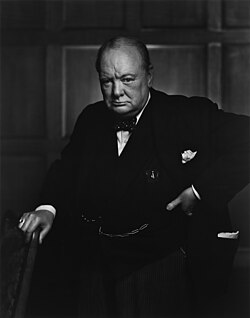

Winston Churchill
Winston Churchill was a British statesman and Prime Minister during World War II. He is known for his strong leadership and inspiring speeches during the war. Churchill played a crucial role in the Allied victory and was awarded the Nobel Prize in Literature.

Winston Churchill was a British statesman and Prime Minister during World War II. He is known for his strong leadership and inspiring speeches during the war. Churchill played a crucial role in the Allied victory and was awarded the Nobel Prize in Literature.
Birth:
Blenheim Palace, 30 November 1874
Death:
London, 24 January 1965
Nationality:
British
Occupation:
Politician
Historian
Military officer
Writer
Autority control:
94507588VIAF
0000000120966628ISNI
000031007BNMM
495/25215VcBA ID
n78085430LCCN
118520776GND